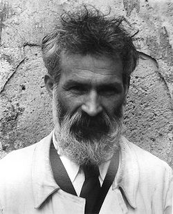
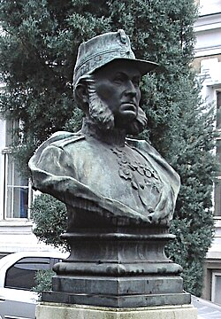
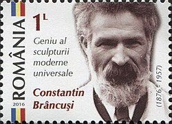
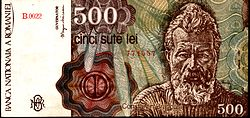
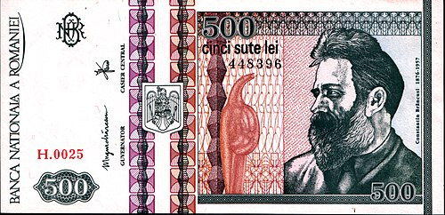

Scurta descriereConstantin Brâncuși (n. 19 februarie 1876, Hobița, Peștișani, Gorj, România – d. 16 martie 1957, Paris, Franța) a fost un sculptor român cu contribuții covârșitoare la înnoirea limbajului și viziunii plastice în sculptura contemporană. Constantin Brâncuși a fost ales membru postum al Academiei Române. Francezii și americanii îl desemnează, cel mai adesea, doar prin numele de familie, pe care îl scriu fără semne diacritice, Brancusi, pronunțându-l după regulile de pronunțare ale limbii franceze. |  |
|
În perioada cât a fost ucenic în Craiova, și-a demonstrat îndemânarea construind o vioară din materiale găsite, ceea ce i-a adus o bursă la Școala de Arte și Meserii din Craiova (1894–1898). Apoi s-a mutat la București, unde a urmat Școala Națională de Arte Frumoase, absolvind în 1902. În timpul studiilor a obținut premii importante pentru lucrările sale, printre care busturi și studii anatomice precum Ecorșeul, realizat cu sprijinul doctorului Gerota. Această lucrare a fost atât de apreciată încât a fost folosită în școlile de medicină și prezentată la New York de Marcel Duchamp în 1933.În 1903 a primit prima comandă publică: bustul generalului Carol Davila, amplasat la Spitalul Militar din București. Comanda a fost inițiată de profesorul său Gerota pentru a-l ajuta să strângă bani de drum spre Paris. După finalizarea lucrării, Brâncuși a refuzat a doua tranșă de plată din cauza criticilor și neînțelegerii din partea consiliului, și a plecat spre Paris pe jos.Pe drum, s-a oprit la Hobița pentru a-și lua rămas bun de la mama sa, apoi a stat o perioadă la Viena, unde a lucrat ca decorator și a vizitat muzee, fiind influențat de arta egipteană. Din Viena a plecat spre München, apoi prin Elveția și Franța. În apropiere de Lunéville, s-a îmbolnăvit grav de pneumonie, dar a fost îngrijit într-un spital de maici.Recuperat, a continuat drumul spre Paris cu trenul. În 1905 a fost admis la École Nationale Supérieure des Beaux-Arts, unde a lucrat până în 1906 în atelierul lui Antonin Mercié. A refuzat oferta de a lucra în atelierul celebrului Auguste Rodin, spunând: „La umbra marilor copaci nu crește nimic.” |  |
|
Unele publicații au susținut că Constantin Brâncuși ar fi făcut Statului român oferta de a-i lăsa moștenire 200 de lucrări și atelierul său din Paris, Impasse Ronsin nr. 10. Este prezentat drept dovadă procesul-verbal de la ședința prezidată de Mihail Sadoveanu, Secțiunea de Știința Limbii, Literatură și Arte a Academiei Republicii Populare Române pe 7 martie 1951. La această ședință au participat George Călinescu, Iorgu Iordan, Camil Petrescu, Alexandru Rosetti, Al. Toma, George Oprescu, Jean Alexandru Steriadi, Victor Eftimiu, Geo Bogza, Alexandru Graur, Ion Jalea, Dumitru S. Panaitescu-Perpessicius și Krikor H. Zambaccian. În ședință a fost refuzată prezentarea de opere ale lui Brâncuși la Muzeul de Artă al R.P.R, considerându-l pe sculptor un reprezentant al burgheziei decadente, dar nu se menționează nimic despre vreo donație sau moștenire.Cercetătorul Doina Lemny a precizat că artistul român n-a lăsat nici o notă de atelier, cu atât mai mult un testament privind donația pe care ar fi făcut-o statului român și pe care acesta ar fi refuzat-o. |
|
Brâncuși a eliberat sculptura de preponderența imitației mecanice a naturii, a refuzat reprezentarea figurativă a realității, a preconizat exprimarea esenței lucrurilor, a vitalității formei, a creat unitatea dintre sensibil și spiritual. În opera sa el a oglindit felul de a gândi lumea al țăranului român. Prin obârșia sa țărănească și-a aflat rădăcinile adânci ale operei sale în tradițiile, miturile și funcția magică a artei populare românești. Brâncuși a relevat lumii occidentale dimensiunea sacră a realității. Figură centrală în mișcarea artistică modernă, Brâncuși este considerat unul din cei mai mari sculptori ai secolului al XX-lea. Sculpturile sale se remarcă prin eleganța formei și utilizarea sensibilă a materialelor, combinând simplitatea artei populare românești cu rafinamentul avangardei pariziene. Verticalitatea, orizontalitatea, greutatea, densitatea cât și importanța acordată luminii și spațiului sunt trăsăturile caracteristice ale creației lui Brâncuși. Opera sa a influențat profund conceptul modern de formă în sculptură, pictură și desen. |
|
Serviciile poștale din Republica Socialistă România au emis, în 1982, la comemorarea a 25 de ani de la moartea sculptorului, o marcă poștală, cu valoarea nominală de [...] lei, care îl reprezintă pe Constantin Brâncuși. În 1998 serviciile poștale ale Republicii Moldova au emis o marcă poștală care reprezintă Coloana Infinitului / Coloana fără sfârșit, de la Târgu Jiu; valoarea nominală a mărcii poștale este de 1 leu moldovenesc. În 2016, Serviciile poștale din România au emis o marcă poștală, cu valoarea nominală de 1 leu, în seria „Geniu al sculpturii moderne universale”, care are reprodus portretul lui Constantin Brâncuși, din față.
|  |
|  |
În aprilie 1991, Banca Națională a României a emis o bancnotă cu valoarea nominală de 500 de lei (ROL), pe aversul căreia era reprezentat Constantin Brâncuși, din față. Pe reversul aceleiași bancnote artistul era reprezentat împreună cu câteva din operele sale. În zona părții albe a bancnotei, privind în zare, privitorul poate vede imaginea din față, a lui Constantin Brâncuși, în filigran. |
|
În decembrie 1992, Banca Națională a României a pus în circulație o nouă bancnotă cu valoarea nominală de 500 de lei (ROL), care îl reprezintă pe Constantin Brâncuși privind spre stânga noastră, împreună cu două dintre operele sale. Pe revers, sunt reprezentate alte lucrări ale artistului. În zona părții albe a bancnotei, privind în zare, privitorul poate vedea imaginea din față, a lui Constantin Brâncuși, în filigran. Alte tiraje îl prezintă pe artist, în filigran, privind spre dreapta noastră. |  |